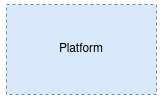
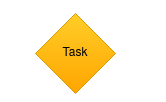
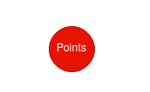
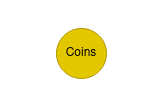
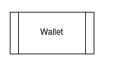
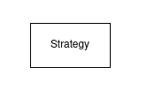
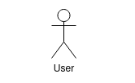
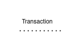

GAME Definitions¶
This section provides a detailed description of the key components within the gamification system, including platforms, games, tasks, points, coins, and wallets.
Platform¶
A Platform is the digital environment or service that hosts multiple Games. Each Platform is characterized by its unique name and serves as a container for organizing and managing related Games.
Game¶
A Game acts as an individual campaign or project within a Platform. Each Game is autonomous and may include one or more Tasks targeted at users. Games can implement specific strategies for the gamification of user actions. If a strategy is not specified for a Game, a default strategy named “default” is applied.
Task¶
A Task is a specific activity or action assigned to users for completion within a Game. Each Task is evaluated according to a gamification strategy, inheriting the strategy of the Game to which it belongs unless specified otherwise. Tasks are designed to be independent of each other.
Points¶
Points represent the rewards awarded to users for completing Tasks within a Game. The amount of Points awarded is determined by the gamification strategy applied to the Task or Game.
Coins¶
Coins are a form of digital currency that users can obtain in exchange for their Points. This exchange is governed by a specific conversion rate, allowing users to redeem accumulated Points for Coins within the system.
Wallet¶
A Wallet is a digital component associated with each user that records and manages the user’s Points and Coins balance. Wallets allow users to view their balance and perform operations like exchanging Points for Coins.
Additional Definitions¶
Gamification Strategy¶
Defines the set of rules and mechanisms that determine how Points and rewards are awarded to users for performing Tasks within a Game. Strategies can vary between Games and can be customized to achieve different engagement objectives.
User¶
Represents a person who interacts with the Games on the Platform, completing Tasks to earn Points and, potentially, exchange them for Coins. Each user has an associated Wallet that tracks their Points and Coins.
Conversion Rate¶
The ratio that defines how many Points are needed to obtain a Coin. This rate can be fixed or vary based on different factors, such as promotions or the user’s level of activity.
Transaction¶
A record of any operation performed within the system, such as the allocation of Points for completing a Task, the exchange of Points for Coins, or any other activity that affects a user’s Wallet balance.